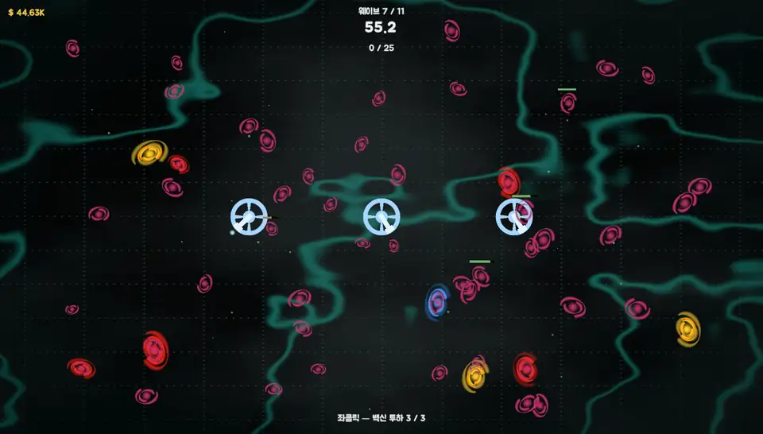
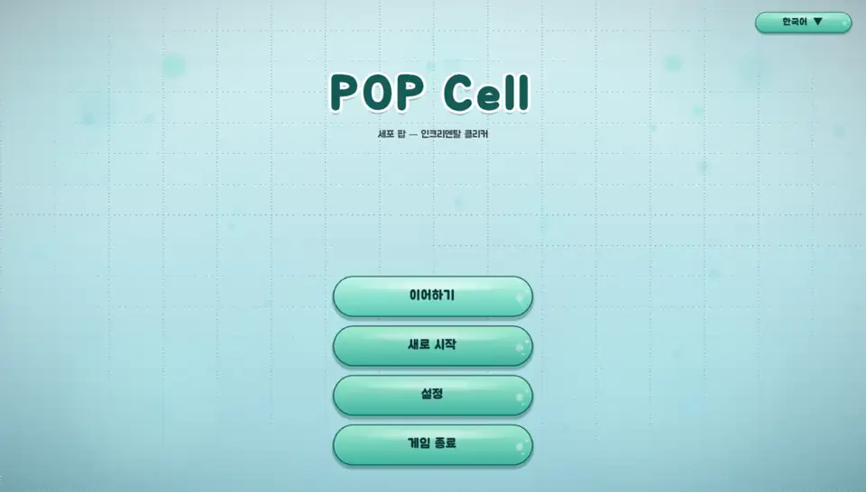
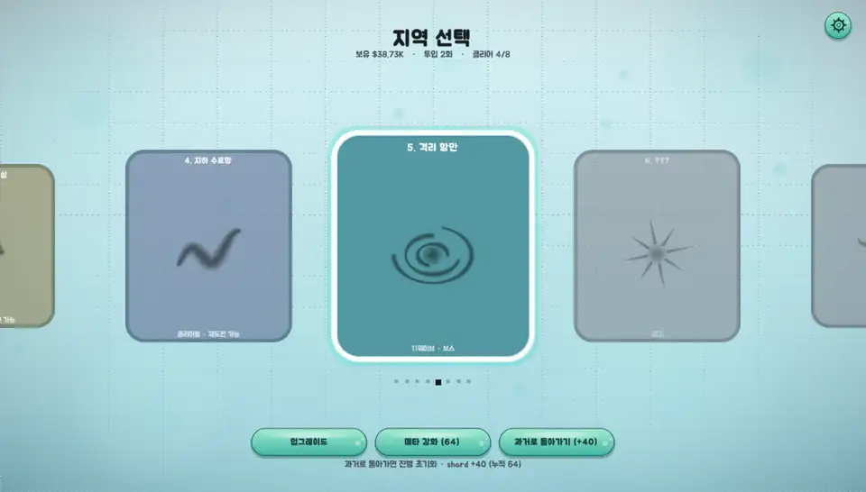
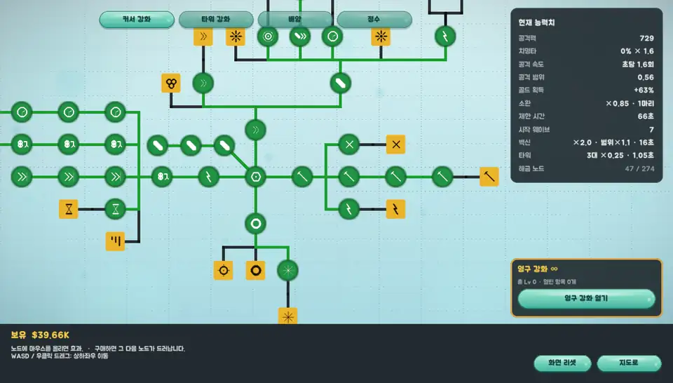
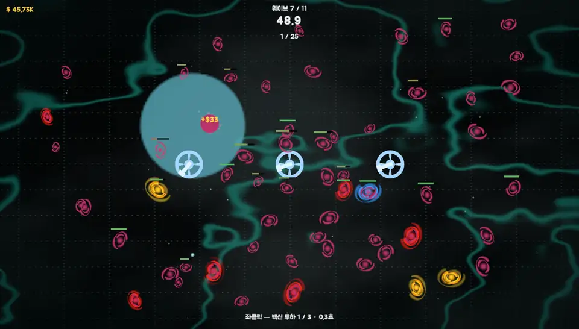
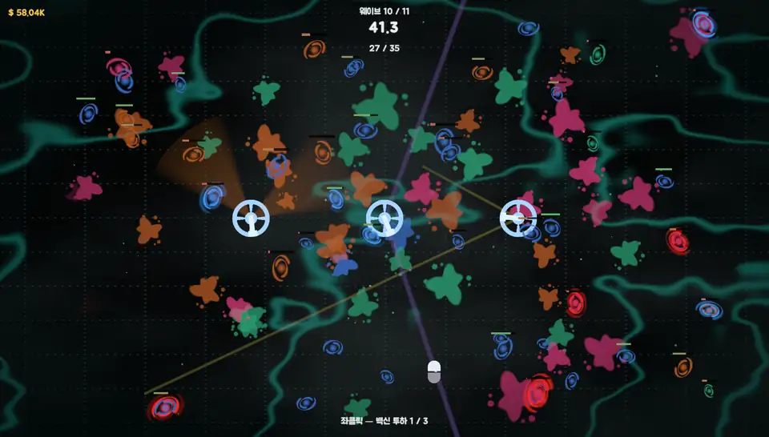
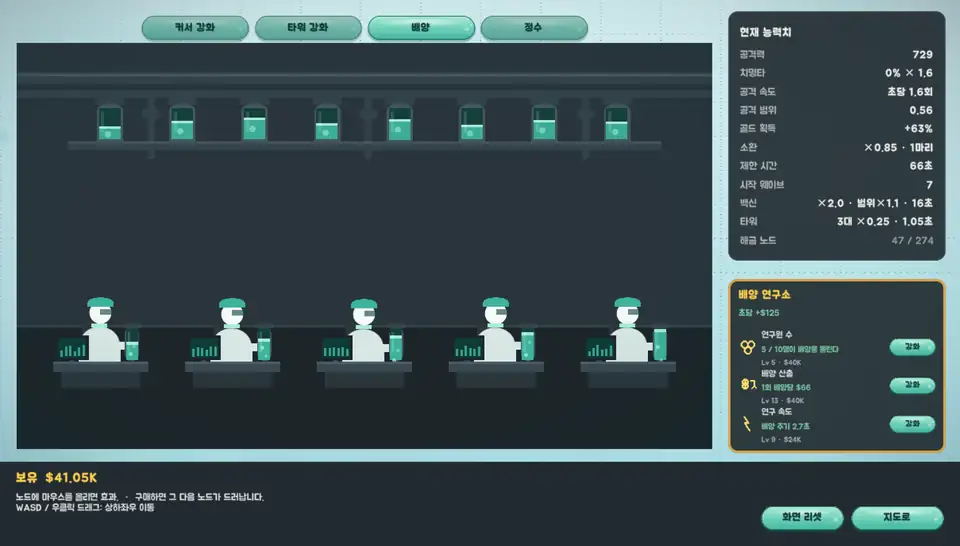
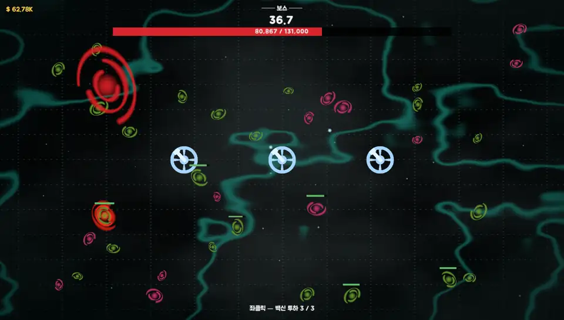

처음 보인 현상: "8지역을 클리어해도 적이 정리되지 않음"
확인 결과 원인은 두 가지. 적 리스트를 도는 도중 정리 호출, 그리고 정리 대상을 오브젝트 이름으로 찾아 나중에 추가된 엘리트·황금 적·백신이 누락
새 적을 추가할 때 다른 시스템이 함께 깨질 수 있음을 보여 준 회귀 사례
감염된 세포와 바이러스를 커서로 터뜨려 8개 지역의 보스를 차례로 처치하는 인크리멘탈 클리커. 기획과 QA 담당, 밸런스 시뮬레이터와 테스터 7명의 FGT로 버그와 진행 불가 구간 발견 및 수정
현미경 시점에서 세포와 바이러스를 다루는 인크리멘탈 클리커의 한 판 흐름
자동 공격 위주의 플레이에 좌클릭 스킬 '백신 투하'를 더해 조작 요소 추가. 판당 사용 횟수 제한으로 사용 타이밍 선택 요소 부여








촬영용으로 중반 진행 상태(4지역 클리어)를 구성해 촬영. 전투 화면은 적 수, 타워 화면은 공격 효과 표시 시간을 평소보다 늘린 상태
감으로 조정하지 않고 재현 → 원인 분석 → 수치 검증 순서로 진행
별도 이슈 트래커 없이 진행해, 커밋과 작업 기록에서 다시 모은 대표 사례 13건. 커밋 번호를 누르면 실제 수정 내용 확인 가능
표가 화면보다 넓으면 좌우로 밀어서 확인
처음 보인 현상: "8지역을 클리어해도 적이 정리되지 않음"
확인 결과 원인은 두 가지. 적 리스트를 도는 도중 정리 호출, 그리고 정리 대상을 오브젝트 이름으로 찾아 나중에 추가된 엘리트·황금 적·백신이 누락
새 적을 추가할 때 다른 시스템이 함께 깨질 수 있음을 보여 준 회귀 사례
시뮬레이터와 FGT 피드백으로 찾은 밸런스 문제를 원인 수치와 함께 정리
플레이 시간 수치는 시뮬레이터 추정치이며, 실제 플레이 측정은 진행 예정